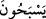

canlı ve akıllı olduklarına delalet ettiğini söylerler. Çünkü vav ve nun ile yapılan
çoğullar akıllılara özeldir. İmam Râzî der ki; müneccimler bu sözleriyle onların tesbih
edecek kadar bir hayat ve akıl sahibi olduklarını kasdetmişlerse onu bizde kabul ederiz.
Çünkü her şey Allah’ı hamd ile tesbih eder. Eğer başka bir şey murad etmişlerse bu
sâbit değildir. Allah Teâlâ’nın putlar hakkında İbrahim (a.s.)’dan naklen “Yemiyor
musunuz? Neden konuşmuyorsunuz?” (es-Sâffât, 37/91-92) buyurmasında olduğu
gibi akıllılara özel bir kuralın onlar için kullanılması buna delâlet etmez.
İmam Nesefî der ki: “ (canlı ve akıllılar gibi) vav ve nun ile çoğul yapılmıştır.
Çünkü güneş, ay ve yıldızların fiillerinde ihtiyarları olmayıp bilakis onları yapmak
üzere âmâde oldukları ve onları zorunlu olarak yaptıkları halde Allah Teâlâ onları
yüzme, geçme, ulaşma gibi akıl sahiplerinin sıfatları ile vasfetmiştir.
Fakir (Bursevî) der ki: “Bu hususun başka bir îzâhı da şudur: Akıllılar için kullanılan
siyga feleklerin ve yıldızların hareketlerinin ilk unsurlarına göredir. Çünkü onların
hareketlerinin ilk unsurları, kendi zâtlarında feleklerin maddelerinden mücerred,
hareketlerinde feleklere bağlı cevherlerdir. Ehlullah nezdinde hayattan hâlî bir şey
olmadığından bu cevherlere “felekî nefisler” denir. Çünkü hayat sırrı yere âid olsun,
göğe âid olsun her şeye sirâyet etmiştir. Özellikle de bu kevnî taayyünün iki gözü olan
güneş ve aya.
Ey genç, yerde ve gökteki bütün zerreler,
Hayat sırrının mazharıdır.
Akıl onu nasıl idrâk edebilir?
O bir sırdır, akıl onu nasıl anlayabilir?
Allah Teâlâ’dan idrâkin hakîkatini, ayaklarımızın kaymasından ve helâk olmaktan
korumasını niyâz ederiz.
[130]. Münâvî, II, 92.
[131]. Münâvî, II, 92.
[132]. Deylemî, Hadis no: 1973
[133]. Deylemî, Hadis no: 5840
[134]. Aclûnî, I, 470.
[135]. Ebû Dâvûd, Etıme 39; Nesâî, Eyman 21; İbn Mâce, Etime 33; Dârimî, Etıme
18.
[136]. Bu bilgiler İsmail Hakkı Bursevî hazretlerinin yaşadığı devrin şartlarına göre
değerlendirilmelidir.
[137]. Buhârî, Tefsir (36), 1.
[138]. Müslim, Fiten, 110.